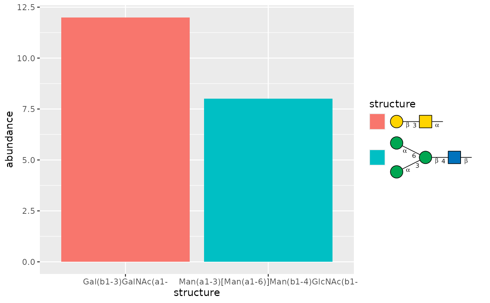

guide_glycan() is a legend guide that replaces the usual text labels with
glycan cartoons while retaining the legend keys drawn by the plot layers.
Mapped discrete values and values returned by the scale's labels argument
may be glycan structure strings supported by glyparse::auto_parse() or
glyrepr::glycan_structure() vectors.
Usage
guide_glycan(
title = ggplot2::waiver(),
theme = NULL,
position = NULL,
direction = NULL,
override.aes = list(),
nrow = NULL,
ncol = NULL,
reverse = FALSE,
order = 0,
size = 0.4,
orient = c("H", "V"),
show_linkage = TRUE,
red_end = "",
fuc_orient = c("flex", "up"),
edge_linewidth = 0.8,
node_linewidth = 0.8,
node_size = 1,
colors = NULL
)Arguments
- title
A character string or expression indicating a title of guide. If
NULL, the title is not shown. By default (waiver()), the name of the scale object or the name specified inlabs()is used for the title.- theme
A
themeobject to style the guide individually or differently from the plot's theme settings. Thethemeargument in the guide partially overrides, and is combined with, the plot's theme. Arguments that apply to a single legend are respected, most of which have thelegend-prefix. Arguments that apply to combined legends (the legend box) are ignored, includinglegend.position,legend.justification.*,legend.locationandlegend.box.*.- position
A character string indicating where the legend should be placed relative to the plot panels. One of "top", "right", "bottom", "left", or "inside".
- direction
A character string indicating the direction of the guide. One of "horizontal" or "vertical".
- override.aes
A list specifying aesthetic parameters of legend key. See details and examples.
- nrow, ncol
The desired number of rows and column of legends respectively.
- reverse
logical. If
TRUEthe order of legends is reversed.- order
positive integer less than 99 that specifies the order of this guide among multiple guides. This controls the order in which multiple guides are displayed, not the contents of the guide itself. If 0 (default), the order is determined by a secret algorithm.
- size
Positive scalar that uniformly scales each legend-label cartoon. Defaults to
0.4.- orient
Glycan drawing orientation, either
"H"for horizontal or"V"for vertical. Defaults to"H".- show_linkage
Whether to show glycosidic linkage annotations inside the cartoons. Defaults to
TRUE.- red_end
Reducing-end annotation passed to
glycanGrob(). Use"~"for a wave, or another string to display that text. Defaults to"".- fuc_orient
Fuc-like triangle orientation passed to
glycanGrob().- edge_linewidth
Linkage linewidth passed to
glycanGrob().- node_linewidth
Node-border linewidth passed to
glycanGrob().- node_size
Node-size multiplier passed to
glycanGrob().- colors
Optional named character vector of monosaccharide fill colors passed to
glycanGrob().
Examples
glycans <- data.frame(
structure = c(
"Gal(b1-3)GalNAc(a1-",
"Man(a1-3)[Man(a1-6)]Man(b1-4)GlcNAc(b1-"
),
abundance = c(12, 8)
)
ggplot2::ggplot(
glycans,
ggplot2::aes(
x = .data$structure,
y = .data$abundance,
fill = .data$structure
)
) +
ggplot2::geom_col() +
ggplot2::scale_fill_discrete(guide = guide_glycan())
